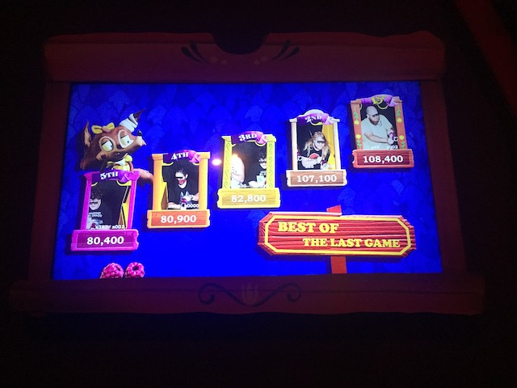
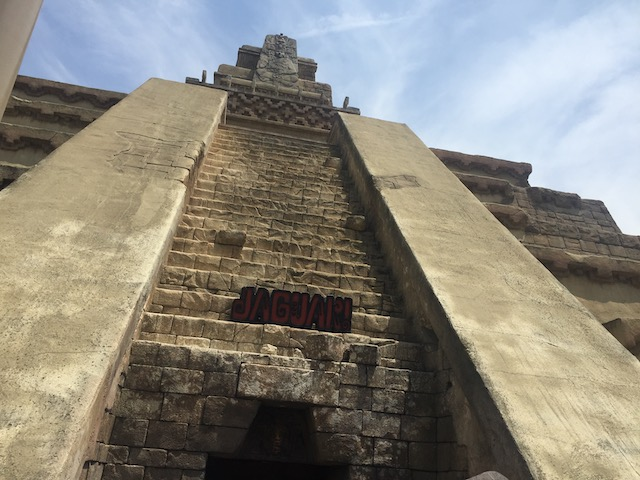

| |
Knotts Summer 2021
All right. So theme parks have opened back up in California, and while some places opened back up right away, Knotts decided to continue with its Taste of Boysenberry Festival for the entire time it was initially planned for before joining SFMM, Disneyland, Sea World, and Universal Studios. But hey. It's over! So let's go to Knotts as a theme park and not just a Food Festival!
You know, thanks to not getting on it super often thanks to heavy crowds combined with the pandemic, I sort of forgot that Ghostrider can really provide a kickass ride. Cause this thing can haul ass.
And of course, right when we get off, the line has grown considerably and is out of the building.
It's been over a year since my last ride on this. And....yeah. Xcelerator still is the best ride at Knotts and in the Top 5 CA Coasters.
Yeah, the overbanks after the Top Hat may be filler fluff elements to burn off speed, but it's still fun. Better than Top Thrill Dragster's brake run ending.
Hmm. The crowds don't seem too bad today. That's always a good thing.
I see you still have some leftover theming from the Boysenberry Festival Knotts. =P
All right. We still have a new for 2020, postponed for 2021 ride to do! Let's finally check out Beary Tales.
"Howdy. Glad to see you folks enjoying the ride! Just don't steal our pies! We stole those right out of the rangers pic-a-nic basket and you damn dirty coyotes aren't gonna take it back!"
Now this technically isn't a new ride as it's just Voyage to the Iron Reef with a new skin and different theming. But for as much as I liked that, this is unquestionably an improvement.
Really wish lines were like this all of the time.
*Sigh* Damn it. Who let the coyotes out!?
Honestly, the ride kind of reminds me of Gobbler Getaway @ Holiday World. Shooting at cute animals in a ride themed to food, works for me. Oh BTW, the ride really smells like Boysenberry Pie. So that gets a big thumbs up from me.
Those coyotes never stood a chance. >=)
Bah! The 3D trend is all over! F*ck this! Throw that sh*t in the garbage!
Knotts continues to capitalize on nostalgia from the older days of the park with their homage to the Soapbox Derby Racers.
 I know I normally stay away from the rapids rides, but it's been so long and the line is short. Screw it!
I know I normally stay away from the rapids rides, but it's been so long and the line is short. Screw it!
Did they do something to this ride during the lockdown cause I actually got wet on Calico River Rapids! This is NOT supposed to happen!
Uh oh. Knotts, I think some of the stagecoach horses got loose.
*gasp* The lockdown is over! This means we can go back to riding THE BEST RIDE EVER!!!
Well, so long Ghost Town. We'll be back for more fun next time.
Does anyone else think that that candy's a little stale? It damn-near tastes like plastic!
I've been away from my Peanuts merchandise for far too long.
Is this new or did I just never notice this mural for all those years? Regardless, it's really nice and does a great job showcasing the history of the park.
 OK. This isn't part of a visit to Knotts. But it did take place on their property. So I was picking Jason up from work at the Knotts Hotel since....he works at the park. And naturally, I was late due to a bunch of errands and bullsh*t helping out a "friend" (So glad that that asshole is out of my life). Anyways, it's late, and I see a group of people running out of the hotel screaming. I guess I'm an idiot, cause I see this, don't think it's anything serious. I just rolled my eyes, and shrugged "God damn it. People are stupid. A giant group running into the streets? They're probably attending a wedding for some dumb sh*t like that. Don't run into the f*cking streets". Then heading back home, I notice some of the WORST traffic ever on those streets (It was damn-near Scary Farm bad), and I see a TON of police cars, and thought to myself "Something must've happened here", but never put two and two together until the next day when a bunch of friends and family asked if we were all right and noticed that there was a Drive-By Shooting that night and that we were witnissing the aftermath and felt guilty about the snarky comments said in my car not knowing what was going on (I obviously didn't take a photo of the night. This is just a stock photo I took to go with this story)
OK. This isn't part of a visit to Knotts. But it did take place on their property. So I was picking Jason up from work at the Knotts Hotel since....he works at the park. And naturally, I was late due to a bunch of errands and bullsh*t helping out a "friend" (So glad that that asshole is out of my life). Anyways, it's late, and I see a group of people running out of the hotel screaming. I guess I'm an idiot, cause I see this, don't think it's anything serious. I just rolled my eyes, and shrugged "God damn it. People are stupid. A giant group running into the streets? They're probably attending a wedding for some dumb sh*t like that. Don't run into the f*cking streets". Then heading back home, I notice some of the WORST traffic ever on those streets (It was damn-near Scary Farm bad), and I see a TON of police cars, and thought to myself "Something must've happened here", but never put two and two together until the next day when a bunch of friends and family asked if we were all right and noticed that there was a Drive-By Shooting that night and that we were witnissing the aftermath and felt guilty about the snarky comments said in my car not knowing what was going on (I obviously didn't take a photo of the night. This is just a stock photo I took to go with this story)
All right. Time for another visit. Didn't do a ton of visits to the park thanks to the bullsh*t of life, but hey. We're here, so let's check the park out.
For some reason, Xcelerator always seems to have the shortest lines out of the major park coasters. So....yeah. Better get on that now.
 Please take good care of this ride Knotts cause it really is awesome.
Please take good care of this ride Knotts cause it really is awesome.
We regret to inform you that the K will no longer be part of the Sky Tower. Please be patient as we put a giant boysenberry on top instead.
Hey Knotts. Here's an idea. How about you demolish Coast Rider, recycle your flyers and scrambler (yet again) and rebuild the Wacky Soapbox Racers there. It would be a GIANT improvement over the worst Wild Mouse ever (F*ck those Shin-Guards), and S&S is offering the ride type for sale. #JustDoIt
I'm not joking. Do it. *Sigh* I regret to inform myself that they probably won't and that this is wishful thinking. =(
So this visit happened to be with a large group. Many of whom aren't huge coaster people and definately aren't coaster enthusiasts. So naturally, something like the Timber Mtn Log Ride would be a huge hit with those people.
Why is the ride continously telling us to "SIT DOWN!!!" when everyone here is alredy sitting down?

"Yeah yeah. I'm a badass with a high score." "Wait. Didn't somebody beat you?" "Shut the f*ck up!"
That unlimited drink pass pays for itself in Knotts visits alone. Let alone me also getting good use out of it at Dorney Park, Cedar Point, and Kings Island this year.
F*CK!!! THAT'S the line for Silver Bullet!? NOT WORTH IT!!!
When THIS is the line for Montezoomas Revenge, you know you'e screwed and came on a bad day.
Sad to see this be part of a dying breed as this really is a ton of fun.

Holy Sh*t! It's been a while (even excluding the COVID Lockdown) since we last rode this.
 No, we're not insane enough to wait an hour for Jaguar. But we did still wait way too long for it since....again. A lot of non-coaster people were here today.
No, we're not insane enough to wait an hour for Jaguar. But we did still wait way too long for it since....again. A lot of non-coaster people were here today.
Still will admit that this one of the better lines of any coaster (Potential Future Top 10 List? Maybe once the site FINALLY gets caught up).
 It's nothing crazy, but if you want a nice scenic view of Knotts, then this is a good ride for that.
It's nothing crazy, but if you want a nice scenic view of Knotts, then this is a good ride for that.
Snore. Riding Supreme Scream is now boring. Can I climb it instead?
Hmm. There's something different about the Charles Schultz....oh wait. It's not called that anymore.
While Charles Schultz was great, it's only fitting to the name the theater after the park founder. Why am I spending so much time focused on the name of a theater in the park?
Now I know they didn't do this in response to my complaint on it, but thank you for fixing your WiFi Knotts. It's actually usable now, which is really appreciated. Incrediblecoasters really appreciates it.
Good! Go see the Charlie Brown show everyone! Maybe now something will finally have a reasonable line!
 Once again, this is what happens when you visit with non-coaster enthusiasts. But hey. Calico Mine Ride is a lot of fun and does have a lot of atmosphere to it. =)
Once again, this is what happens when you visit with non-coaster enthusiasts. But hey. Calico Mine Ride is a lot of fun and does have a lot of atmosphere to it. =)
Aww. Thank you for the Coyote Pup Stuffed Animals. They just love sitting in my closet collecting dust (Though seriously. I do like them. I just don't have room to have them out).
All right. Sipping on some Boysenberry Chocolate Sasparilla. Good ol' Knotts drinks that.....I'm not gonna lie. I really don't like chocolate flavored things that aren't chocolate (Chocolate Soda just tastes gross. OK?). So....not a huge fan of this.
Well, that was a fun day. Time to end it with dinner at Bob's Burgers.
 I'm not gonna lie. I entirely decided to eat here after driving by it, and because it reminds me of the FOX Show (seriously. That show's really good. It and South Park are the only two adult cartoons that are still good and don't need to be cancelled).
I'm not gonna lie. I entirely decided to eat here after driving by it, and because it reminds me of the FOX Show (seriously. That show's really good. It and South Park are the only two adult cartoons that are still good and don't need to be cancelled).
 Unfortunately, the food here, while good, was also fairly generic (Why is it that every single Mom & Pop Burger Joint in SoCal appears to be the same damn resteraunt under a different name?). I want some of the stuff from the show (I really wanna make the "Baby You Can Chive My Car Burger" sometime). Please make THAT a resteraunt. Given the popularity of the show, I KNOW it would be a huge financial success.
Unfortunately, the food here, while good, was also fairly generic (Why is it that every single Mom & Pop Burger Joint in SoCal appears to be the same damn resteraunt under a different name?). I want some of the stuff from the show (I really wanna make the "Baby You Can Chive My Car Burger" sometime). Please make THAT a resteraunt. Given the popularity of the show, I KNOW it would be a huge financial success.
Home
|